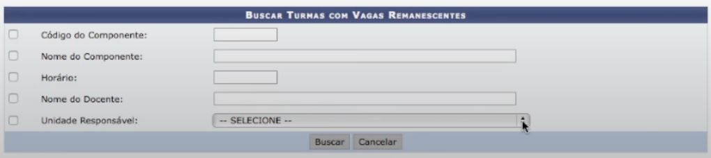
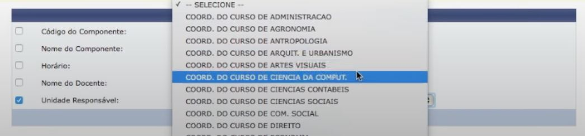
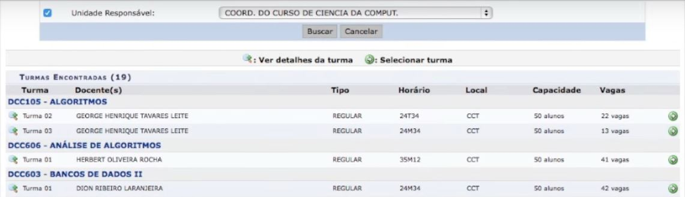
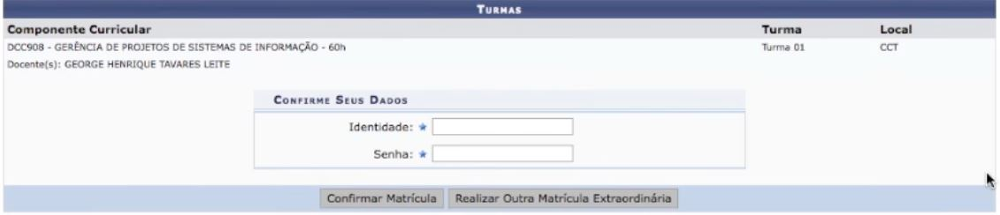
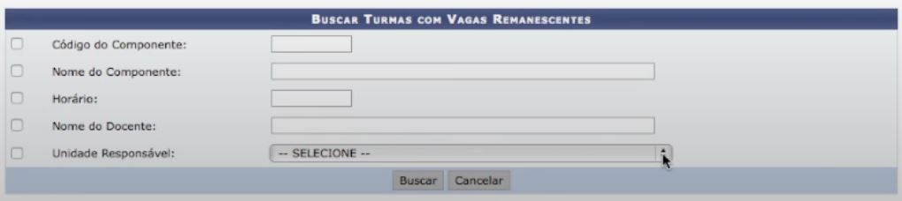
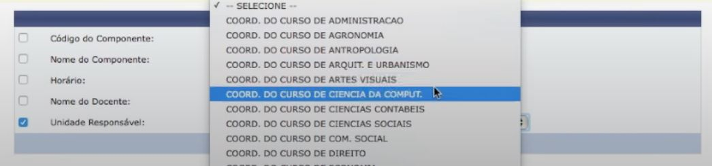
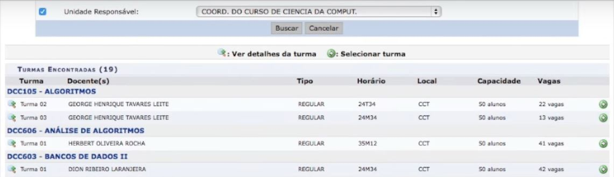
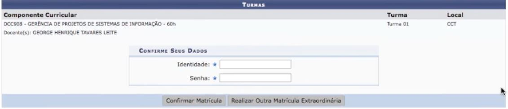

Registrar
Entrar
Acesse sua conta do SIGAA e procure por:
Ensino -> Matrícula On-line -> Realizar Matrícula Extraordinaria

Leia o quadro amarelo e marque a caixa de "Unidade Responsável".

Selecione seu curso(Ex: Ciencia da Computação) e clique em "Buscar"

Encontre a turma que você deseja fazer a matrícula e clique no botão verde localizado à direita.

insira seus dados e clique em "Confirmar matrícula"

Ensino -> Matrícula On-line -> Realizar Matrícula Extraordinaria
Leia o quadro amarelo e marque a caixa de "Unidade Responsável".

Selecione seu curso(Ex: Ciencia da Computação) e clique em "Buscar"

Encontre a turma que você deseja fazer a matrícula e clique no botão verde localizado à direita.

insira seus dados e clique em "Confirmar matrícula"

Se preferir, assista o tutorial:
Tempo de vídeo: 02:25
Tempo de vídeo: 02:25